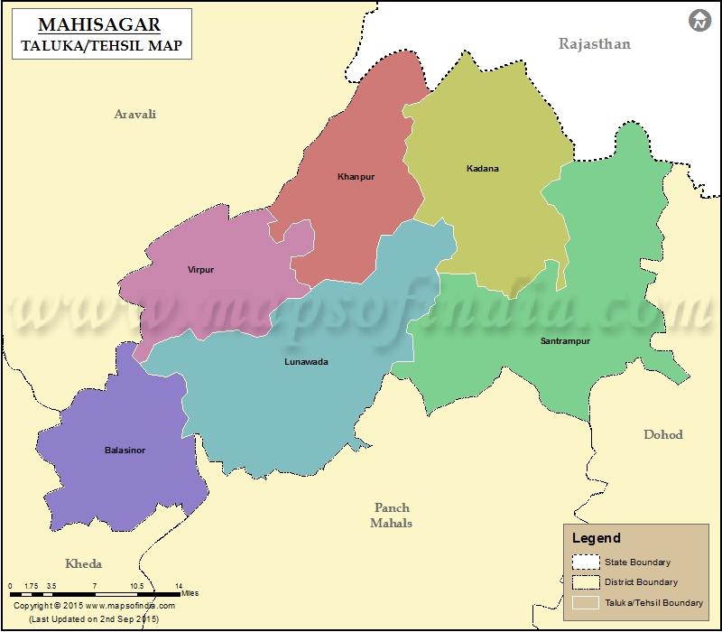
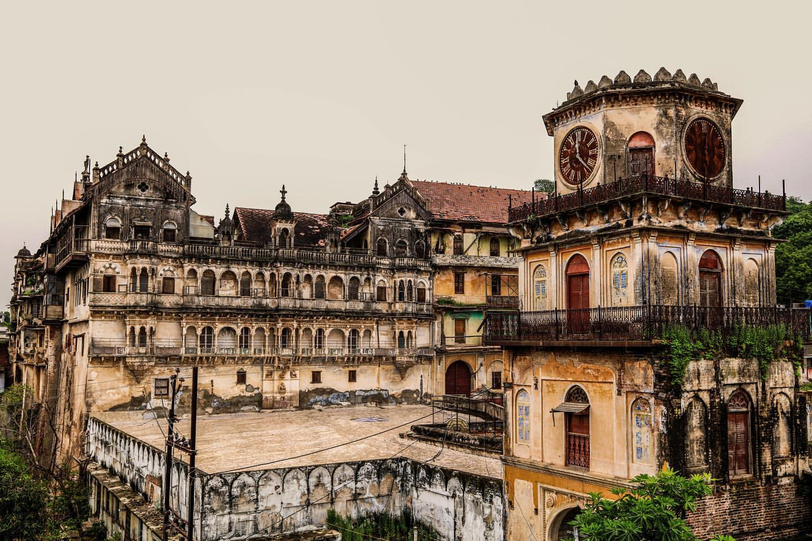
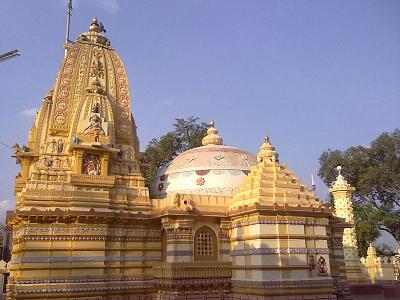
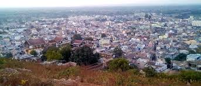

Know where it's located
lunawada is situated between 23°07 to 59°88" North Latitude and 73°37 to 00°12' East Longitude. lunawada is in mahisagar District. has came in to existence after the division of Panchmahal District on 26/01/2013.The District is surrounded by panchmahal District and Dahod District.panchmahal District in the west. It was previously within the boundaries of Panchmahal District. However, in 2013, Lunawada was recognized as a Taluka of mahisagar district.
Let's dive into it's History
Lunawada is a small city on the banks of the Panam River and Mahi River in mahisagar District in the State of Gujarat, India. The name Lunawada is derived from Luneshwar Mahadev, a temple of Lord Shiva.Lunawada is the administrative headquarters of the Mahisagar district and one of the most developi ng towns of central Gujarat. Lunawada was formally a Taluka, administrative subdivision, in the Panchmaha l district up to 15 August 2013.Lunawada (also transliterated as Lunavada) is a municipality in the Mahisagar district, formerly in the northern part of Gujarat state of India. It is 120 kilometres from Ahmedabad and 110 kilometres from Vadodara. HH Maharaja Sri Virbhadrasinhji Ranjitsinjhi 1929/1986, born 8 June 1910 in Lunawada, invested with full ruling powers on 2 October 1930, Member of the Chamber of Princes, married Maharajkumari Manher Kunwari [HH Maharani Kusum Kunwari of Lunawada], daughter of Capt. HH Maharana Raj Saheb Shri Sir Amarsinhji Banesinhji (Gangubha) of Wankaner, and had issue. He died in 1986. lunawada is srrounded by water the sources being the Panam river, Vasant Sagar, Kishan Sagar, Kanka Talav Veri, Mahi River and Darkoli Talav lake.
Tourism
Places that visitor can visit are: Luneshwar Temple, Ramji Mandir, Hanumaan ni Veri,Kakachiya Triveni Sangam, Panam Bridge, Panam River Check Dam, Fateh Baug, Fuvara Chawk, Indira Gandhi Stadium, Kalka Mata ni Tekari, Javahar Garden, Vasiya Talav, Amaze Little Garden and Ganipir Dargah Sharif. Visitors can also visit places like the Panam Bridge at evening. Another place to visit is the King's Palace of historically significance in the State of Gujarat. Near Lunawada there is a village named Limadiya where the palace is situated.
Luneshwar temple
Lunawada is known for the temple of Luneshwar Mahadev. This ancient temple of Lord Shiva has a lot of religious importance as it is said that the Pandavas dwelled at this temple during their stay in the forest. The statue of Lord Shiva Lingm is of white stone found in the quarries of Madhya Pradesh. There is a Saint Kabir Ashram opposite to this Shiva temple. All the walls of this Ashram are engraved with the Dohas of Saint Kabir. Another ancient temple of Bhairavnath Mahadev is situated near the Luneshwar Mahadev temple. This temple has a statue of Bhairav and one of Lord Shiva. The next attraction is the temple of Melia Mahadev, which is 2 miles away from Lunawada. The local people come here to pray to fulfill their wishes and desires. A temple named Mitha Ganesh ni deri situated in mandvi bazar (beside pipli fali) is held here.
Hill Top
Kalka Mata ni Tekari is one of the hill top in Lunawada city and one of the highest point of Lunawada.From the hilltop you will find a beautiful view of the city and on the top there is a temple and bunch of slides and swings. It also has the ruins of the fort on the top. People on weekends come here for a short family picnic enjoying the cool breeze and a perfect view. People also visit the top for jogging purpose and to visit the temple at the hill top.this is a mataji mandir so at every navratri ashtami lunawada's all people are going there.this is the one of the best beauty of Lunawada.
Let's Know Some Statisticts
| Country | India |
|---|---|
| State | Gujarat |
| District | Mahisagar |
| Taluka | Lunawada |
| Collector & DM | Dr.Bhavin Pandya I.A.5. |
| Government | |
| Type | Municipality |
| Body | Lunawada Municipality |
| Area | |
| City | 14km2 |
| Urban | 3642 km2 (1486 sqmi) |
| Languages | |
| Official | Gujarati |
| Time zone | UTC+5:30 (IST) |
| PIN | 389230 |
| Telephone Code | 2673 |
| Vehicle Registration | Gj-35 |
Education Facilities

Educational institutions in Lunawada include: Kisan madhyamic vidhyalaya,Chanakya school, remblers,s.k high school,vedant international school,vibrant waves,kalrav vidhyamandir,backpaqn schhol,arash,infinty,bright day schhol.
Some New Dine Ins
bhavnagri Kachori, Samosa, kisan dabeli are the main namkeen of the city.there is a special sweet item known as khurmi.Lunawada is also known for Mattha and Pakwan. bombay chopati and Rjasthan hotel are the hotspot for snacks. Some new ones are sankalp, Chatkazz, saffron,Chhaswala.